IQ Q&A
Q1：isp数据流走向是怎样的？
【Macaron&Ispahan&Pudding&Tiramisu】
通常bayer pattern->RGB->YUV，sensor rawdata输入isp，isp吐出yuv data。
Q2：isp调试基本流程是怎样的？
【Macaron&Ispahan&Pudding&Tiramisu】
通常可以从以下四个维度：
第一维度，亮度，是人眼最敏感的图像感觉，合适的亮度对后面的调试帮助很大，亮度维度涉及的的模块基本就是AE。WDR、Gamma、shading也影响整体画面亮度。
第二维度，色彩，建议在AE确定后进行色彩调试，过高过低的亮度直接影响AWB和CCM的标定。这个维度通常涉及AWB，OBC，ColorCorrection，Saturation等。
第三维度，对比度维度，即说的通透性，对比度高，调整这个模块来让画面接近人的感官，通常主要是Gamma，GammaStyle，WDR等。
第四维度，细节与噪声维度，BayerCompensation,BayerDenoise,Denoise, sharpness等，前面维度的调试都会带出噪声，所以调整这个维度通常要去权衡前3个维度，也是涉及面最广的维度。
Q3：画面亮度不合适如何调试？
【Macaron&Ispahan&Pudding&Tiramisu】
查看AEInfo信息，点击Read Page按钮刷新AEInfo，得到当前画面的BV值，再进入AE->AETarget->Target BV得到当下环境所使用的Target Offset挡位，调节对应挡位的Target offset就可以调整AEtarget，数值越大，目标亮度越大。AEtarget值域为0~2000。
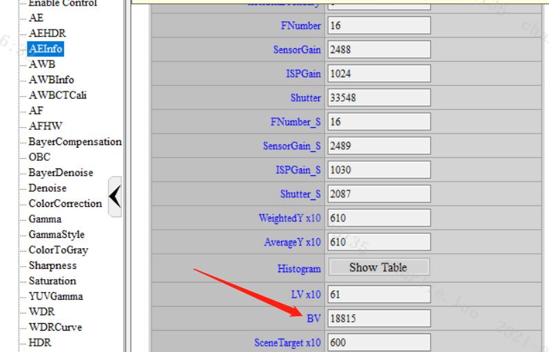
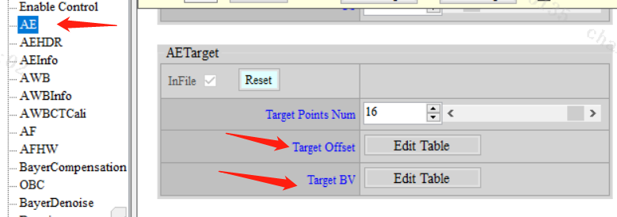
Q4：画面收敛频繁或者环境变化很大画面不收敛是什么导致的？
【Macaron&Ispahan&Pudding&Tiramisu】
通常来说是AE收敛区间调节过大或这过小导致的，AE->AEconverge模块的ConvThdIn和ConvThdOut需要调节到合适的值。AE收敛停止的条件是画面亮度达到target-ConvThdIn到target+ConvThdIn，而AE开始收敛的条件是画面亮度达到target-ConvThdOut到target+ConvThdOut。
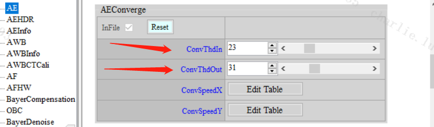
Q5：画面AE收敛震荡，稳定不下来，是什么原因？
【Macaron&Ispahan&Pudding&Tiramisu】
AE->AEconverge模块的ConvThdIn要小于ConvThdOut，如果ConvThdOut大于ConvThdIn，则会导致收敛频繁收敛，稳定不下来的情况。
Q6：如何调节AE收敛速度（步长），收敛慢或者收敛过冲导致闪烁？
【Macaron&Ispahan&Pudding&Tiramisu】
AE->AEConverge模块，首先确认合适的ConvThdIn和ConvThdOut。
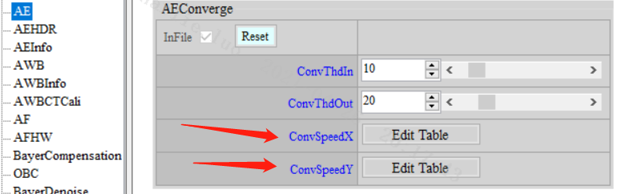
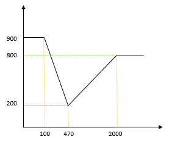
假如ConvSpeedX为{100，470，470，2000}，ConvSpeedY为{900，200，200，800}，如上图，通常ConvSpeedX使用默认即可。
计算方法：
暗到亮收敛，目前亮度100, 如果目标亮度是470, 那么收敛速度查表为900，下次收敛的亮度为425，计算方法：100 + (470 - 100) * 900 / 1024 = 425。
亮到暗收敛，目前亮度2000, 如果目标亮度是470, 那么收敛速度查表为800，下次收敛的亮度为804，计算方法：2000 - (2000 - 470) * 800 / 1024 = 804。
通常调节ConvSpeedY的第一和第四个参数，即可控制收敛步长。
Q7：画面亮度过曝，该如何调节？
【Macaron&Ispahan&Pudding&Tiramisu】
首先，先在Enable Control模块，把Gamma模块Disable，然后再观察画面，如果画面过曝减轻明显，那很可能是gamma强度调试太大导致，调整gamma曲线即可。但是如果画面还是过曝，进入AE模块，调低对应的Target Offset即可。
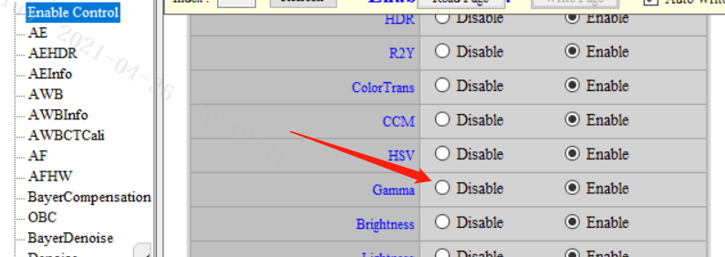
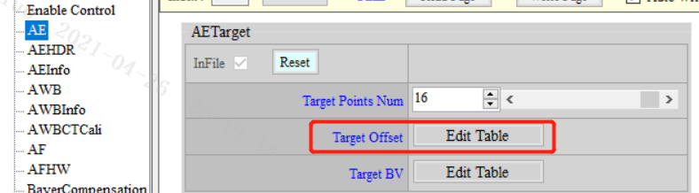
Q8：画面出现滚动的水波纹，该如何调整？
【Macaron&Ispahan&Pudding&Tiramisu】
水波纹形成的原因和sensor 的rolling曝光方式密切相关，如图： 50Hz光源下，shutter大于10ms的情况，每行的能量积分不同，出现明暗变化的情况，切每帧的起始高度不同，导致画面播放时明暗变化的滚动现象。
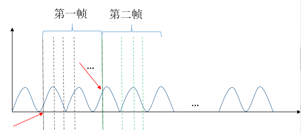
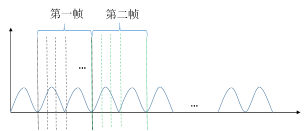
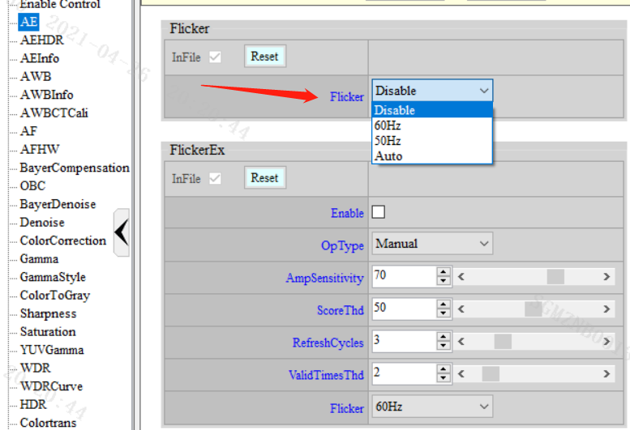
AE->Flicker和AE->FlickerEx可修复此问题，AE->Flicker选择对应频率即可，AE->FlickerEx选择auto即可完成自动选择。原理如上图，让shutter满足1/100s的整数倍，则不会出现flick。同理60hz，满足1/120s的整数倍。即最大曝光时间为（1/灯光频率/2）的整数倍即可。
如果shutter低于1/100s（1/120s），上诉两个模块都会无效，如下图说明：
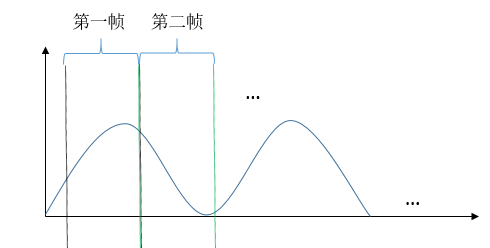
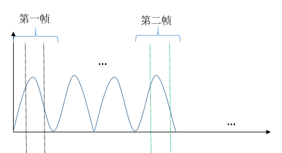
此时需要设置对应sensor帧率，50hz设置25fps，60hz设置30fps，让每帧的起点同一高度，这样画面有明暗变化，但是无滚动现象。
Q9：为什么夜视（低照度补光）情况下，相机的收光一般怎么调整？
【Macaron&Ispahan&Pudding&Tiramisu】
AE->AEWinWeight调整对应的曝光权重，白天彩色Weighting PAGEle ID通常选择Average，夜视黑白建议选择Center模式，如果还需要更强的收光比如看清车牌，可选择spot模式，也可以根据需要调整Weighting的16x16具体数值。
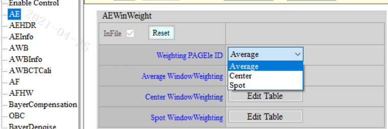
Q10：曝光表如何设置？
【Macaron&Ispahan&Pudding&Tiramisu】
AE->AEPlainLongTb1是设置曝光表模块，可以通过此模块控制曝光优先级，曝光优先还是增益优先，sensor gain优先还是isp gain优先。如下，NumOfLongExpoTbIEntry为6的情况：
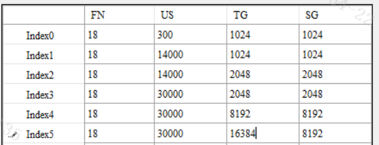
FN：F num，光圈值x10，填上对应的光圈值。
US：曝光时间，单位为us。
TG：total gain，总增益，x1024。
SG：sensor gain，sensor增益，x1024。
TG = SG * ispgain。
上面曝光表的意思为：光圈为1.8，从Index 0可以看出，US min为300us，TG min为1x，SG min为1x。
Index0到Index1，只有us从300增加到了14000，表明此时曝光策略为曝光优先。
Index1到Index2，TG和SG从1024增加到了2048，可计算出isp gain为1x，表明此时为增益优先，且使用SG。
Index2到Index3，表明曝光优先。
Index3到Index4，表明增益优先，使用SG。
Index4到Index5，表明增益优先，增益使用isp gain，ispgain可以使用到2x。
Table表里会去限制min shutter和max shutter，min total gain和max total gain，min sensor gain和max sensor gain，min isp gain 和max isp gain，所以AE->ExposureLimit里面的设置要对应，否则会影响到table表。
Q11：高光抑制背光补偿如何设置？
【Macaron&Ispahan&Pudding&Tiramisu】
AE->ExposureStrategy或者AE->ExposureStrategyEx，AE->ExposureStrategyEx开启AE->ExposureStrategy会失效。可自行设计防过曝或过暗策略，AE会针对此策略去动态调整SceneTarget。
曝光策略模式，有Count Mode与Target Mode可做选择。
选择Count Mode时，主要使用BT(DT)_ThdY以及BT(DT)_Percentx10。使用者可以指定在多少亮度以上(以下)的统计值占统计值总数量大约多少千分比。
选择Target Mode时，主要使用BT(DT)_Percentx10及BT(DT)_Taergetx10。使用者可以指定最亮(最暗)多少千分比的统计值平均亮度要接近多少亮度。
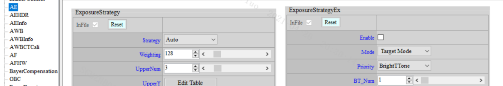
Q12：画面亮度收敛震荡或者闪烁，如何排查问题点？
【Macaron&Ispahan&Pudding&Tiramisu】
可以从以下几个方面去分析查找问题：
- AE收敛速度是否调节过快导致过冲。可设置Manual AE来判断是否和AE有关系。
- WDR->Auto.GlobalDarkToneEnhance曲线选择是否跨度太大，这里的tonemapping曲线不会做插值，切曲线会看到明显的跳变。可以关闭WDR来判断是否和WDR有关系。
- sensor端gain和shutter的生效帧是否为同一帧，不同帧也会导致收敛闪烁。
Q13：HDR如何设置曝光比？
【Macaron&Ispahan&Pudding&Tiramisu】
首先确定使用的曝光比，填入HDR->AEHdrRatio，hdr ratio是by tatal gain，再确认sensor短曝帧最小曝光时间，设置好HDR->AEPlainShortTb1，再根据曝光比设置AE->AEPlainLongTb1,shutter需要满足曝光比，注意long shutter + short shutter < 1/fps，否则可能会出现曝光打不满的情况。
Q14：HDR出现局部工频干扰现象，是什么原因导致的，有什么办法优化吗？
【Macaron&Ispahan&Pudding&Tiramisu】
HDR 模式下由于短曝shutter 往往受限无法达到de-flicker 的最短物理限制，故短曝区在阴极射线管光源下常无可避免会出现Flicker 问题，此时建议只能调整fps 到与电源频率成倍数的fps 张数来让banding 问题定住而不滚动(ex: 60hz/30fps, 50hz/25fps)，目前尚无法根除这个问题。
Q15：HDR长短曝融合区破碎状的闪动是什么原因导致的？
【Macaron&Ispahan&Pudding&Tiramisu】
此问题多由长、短曝张亮度不匹配所导致，建议可先check AE 中的HDR Ratio 与HDR API 中的SensorExpRatio 两边设定是否一致，或关闭Dynamic Ratio 的动态补偿机制让长、短曝合成完全只参考YwtTh1 及YwtTh2 的设定，并观察长、短曝交界处是否存在明显的边界，从而厘清是否确实有两张亮度不匹配的问题。调整合适的曝光比。
Q16：HDR融合区的鬼影现象要如何优化？
【Macaron&Ispahan&Pudding&Tiramisu】
尽量参考短曝影像为主，就可以让鬼影现象减弱。
-
可尝试降低MotionTh，尽量判断为动区，但如果调太小，则平坦区也会被判断成动区，进而使用短曝，会使画面较脏。
-
可尝试降低MotionAdjLut，让动区使用短曝的比例增加，但也会使画面较脏。
-
如果有需要依据亮度调整，再微调NosieLevel 即可。
Q17：HDR模式下室内/室外/背光人脸过暗的现象如何优化？
【Macaron&Ispahan&Pudding&Tiramisu】
- 将 PreEnhance 调至11~15，值越大暗处越亮，但整体越蒙。
- 调整WDRcruve，将暗处拉亮。
- 拉高 AE target，但可能会牺牲室外过曝区细节。
- BoxNum 不要设太多，虽然设大会让整体对比感较好，但相对暗的人脸会更暗。
- WDRStrByY 暗处不要调太小，如果有需要限制暗区拉亮程度，可以调整DarkLimit。
Q18：日夜切换出现绿帧红帧？
【Macaron&Ispahan&Pudding&Tiramisu】
通常彩色切黑白容易遇到红一帧的情况，这是ircut先切，导致红外灯影响画面偏红。而黑白切彩色容易遇到绿一帧的情况，这是先load bin，再切ircut，红外影响了AWB导致绿帧。通常是load bin，切ircut的顺序不对，顺序建议如下：
彩色切黑白，先彩转灰，再load bin，最后切ircut。
黑白切彩色，先切ircut，再load bin（这个过程会灰转彩）。
上述过程可以加sleep做延时来优化，因为AWB可能要几帧才能收敛正常。
Q19：怎么通过命令读取sensor 寄存器信息？
【Macaron&Ispahan&Pudding&Tiramisu】 在设备中找到i2c_read_write命令，如果没有的话可以在sdk中找到，放入到设备中。 运行命令./i2c_read_write，可得到如下提示。
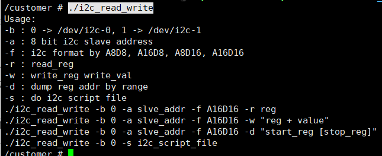
例如：./i2c_read_write -b 1 -a 0x80 -f A8D8 -r 0x0d
-b:i2c设备号，通常是1。
-a:i2c地址，sensor driver code或者sensor datasheet里面都能找到。
-f:A是sensor寄存器地址的长度，通常是8bit或者16bit。D是sensor寄存器值得长度，通常长度也是8bit或者16bit。
-r：读寄存器。
-w：写寄存器，./i2c_read_write -b 1 -a 0x80 -f A8D8 -w “0x0d 0x12”。
Q20：HDR mode 长短曝gain为什么不一样？
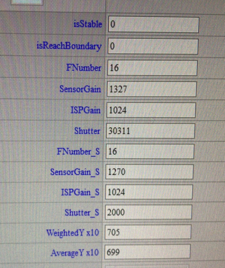
【Macaron&Ispahan&Pudding&Tiramisu】
Sensordriver会设置ae_gain_ctrl_num和ae_shutter_ctrl_num，控制AE计算时gain/shutter分开计算还是用相同值。HDR mode有三种组合方式：
a. gain_ctrl = 1 shutter_ctrl = 2，share gain&separate shutter
b. gain_ctrl = 2 shutter_ctrl = 1，separate gain&share shutter（基本不使用）
c. gain_ctrl = 2 shutter_ctrl = 2，separate gain&separate shutter
第一种方式长短曝gain会用相同值，长短曝shutter比值随HDR ratio变化；第二种方式不建议使用，画质相较于其他两种方式会有损失；第三种方式AE会根据HDR ratio计算出长短曝的曝光总量（gain*shutter），再分别分配给gain/shutter，使用这种会出现长短曝gain不一样的情况。
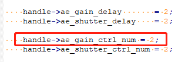
Q21：修改AE曝光表为什么不生效？
【Macaron&Ispahan&Pudding&Tiramisu】
SensorDriver会限制sensor能达到的min/max gain/shutter，设置曝光表时min/max gain/shutter不能超过此限制，当设置值超出范围时，串口会有提示，红框为HW限制的mingain/maxgain/minshutter/maxshutter，蓝框为此次设置值。
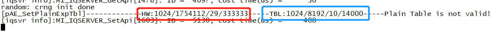
Q22：AE info isStable和isReachBoundary如何判定？
【Macaron&Ispahan&Pudding&Tiramisu】
以下条件满足任意一条isStable为1：
a. WeightedY在(Target – conv.in, Target+conv.in)区间内，AE判断为收敛稳定；
b. Sensorgain*shutter*ispgain达到AE曝光表设置的min/max值，被认为达到边界值，无法继续增大或减小，isReachBoundary为1。（注意：是比较AEinfo中totalgain*shutter与曝光表设置的min/max totalgain*shutter，不是单独的gain/shutter，例如下图isReachBoundary也被判断为1）
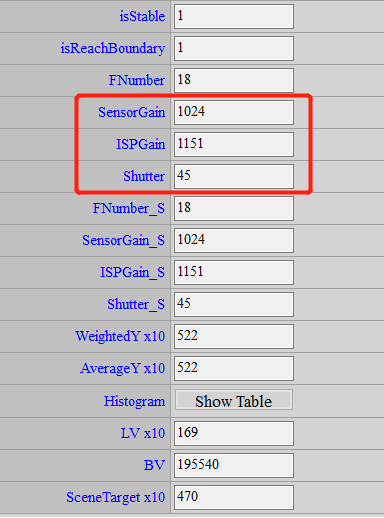
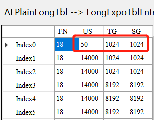
Q23：如何打印AF 统计值打印？
【Macaron&Ispahan&Pudding&Tiramisu】
滤波器统计值如下：
| Filter Bit & Chip Type | Twinkie | Pretzel | Macaron/Pudding |
|---|---|---|---|
| IIR / Sobel | 34 | 35 | 35 |
| Luma | 34 | 32 | 32 |
| YSat | 24 | 22 | 22 |
比如，IIR滤波器的统计值为35bit，结构体如下，用8bit*5*16来表示16组IIR滤波器的统计值。
//for Tiramisu
typedef struct{
MI_U8 high_iir[5*16];
MI_U8 low_iir[5*16];
MI_U8 luma[4*16];
MI_U8 sobel_v[5*16];
MI_U8 sobel_h[5*16];
MI_U8 ysat[3*16];
} AF_STATS_PARAM_t ;
所以可以参考以下的code获取AF统计值：
int i=0,x=0;
printf("\n\n");
//print row0 16wins
x=0;
for (i=0; i<16; i++){
printf("[AF]win%d-%d iir0: 0x%02x%02x%02x%02x%02x,iir1:0x%02x%02x%02x%02x%02x, luma:0x%02x%02x%02x%02x, sobelh:0x%02x%02x%02x%02x%02x, sobelv:0x%02x%02x%02x%02x%02x ysat:0x%02x%02x%02x\n",
x, i,
af_info->af_stats.stParaAPI[x].high_iir[4+i*5],af_info->af_stats.stParaAPI[x].high_iir[3+i*5],af_info->af_stats.stParaAPI[x].high_iir[2+i*5],af_info->af_stats.stParaAPI[x].high_iir[1+i*5],af_info->af_stats.stParaAPI[x].high_iir[0+i*5], af_info->af_stats.stParaAPI[x].low_iir[4+i*5],af_info->af_stats.stParaAPI[x].low_iir[3+i*5],af_info->af_stats.stParaAPI[x].low_iir[2+i*5],af_info->af_stats.stParaAPI[x].low_iir[1+i*5],af_info->af_stats.stParaAPI[x].low_iir[0+i*5],
af_info->af_stats.stParaAPI[x].luma[3+i*4],af_info->af_stats.stParaAPI[x].luma[2+i*4],af_info->af_stats.stParaAPI[x].luma[1+i*4],af_info->af_stats.stParaAPI[x].luma[0+i*4], af_info->af_stats.stParaAPI[x].sobel_h[4+i*5],af_info->af_stats.stParaAPI[x].sobel_h[3+i*5],af_info->af_stats.stParaAPI[x].sobel_h[2+i*5],af_info->af_stats.stParaAPI[x].sobel_h[1+i*5],af_info->af_stats.stParaAPI[x].sobel_h[0+i*5],
af_info->af_stats.stParaAPI[x].sobel_v[4+i*5],af_info->af_stats.stParaAPI[x].sobel_v[3+i*5],af_info->af_stats.stParaAPI[x].sobel_v[2+i*5],af_info->af_stats.stParaAPI[x].sobel_v[1+i*5],af_info->af_stats.stParaAPI[x].sobel_v[0+i*5],
af_info->af_stats.stParaAPI[x].ysat[2+i*3],af_info->af_stats.stParaAPI[x].ysat[1+i*3],af_info->af_stats.stParaAPI[x].ysat[0+i*3]
);
}
Q24：AF滤波器统计值MI_U8 high_iir[5*16]表示什么意思？
【Macaron&Ispahan&Pudding&Tiramisu】
比如Pudding chip，一个low_iir滤波器统计值为35bit，则如图表示，5*8bit为一个滤波器统计值，16表示16个win，如果没用满16个win，多余的win则不用管。
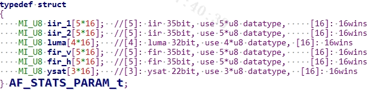
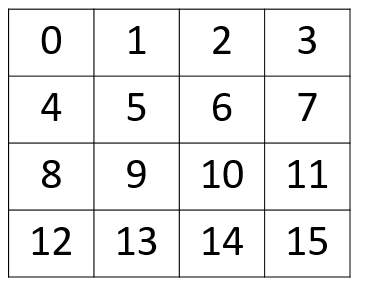
如上图是AF_ROI_MODE_NORMAL，16个win，则MI_U8 iir_1[5*16]中
Win0: iir_1[5*0+4]<<32 + iir_1[5*0+3]<<24 + iir_1[5*0+2]<<16 + iir_1[5*0+1]<<8 + iir_1[5*0] Win1: iir_1[5*1+4]<<32 + iir_1[5*1+3]<<24 + iir_1[5*1+2]<<16 + iir_1[5*1+1]<<8 + iir_1[5*1] Win2: iir_1[5*2+4]<<32 + iir_1[5*2+3]<<24 + iir_1[5*2+2]<<16 + iir_1[5*2+1]<<8 + iir_1[5*2] … Win15: iir_1[5*15+4]<<32 + iir_1[5*15+3]<<24 + iir_1[5*15+2]<<16 + iir_1[5*15+1]<<8 + iir_1[5*15]
注意：上面的取值做法需要用U64来保存数值，如果为了节省空间可以丢掉低8位，使用U32来保存。比如：
Win0: iir_1[5*0+4]<<24 + iir_1[5*0+3]<<26 + iir_1[5*0+2]<<8 + iir_1[5*0+1]
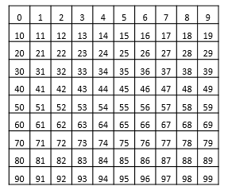
typedef struct{
AF_STATS_PARAM_t stParaAPI[16];
} CusAFStats_t;
如上图是AF_ROI_MODE_MATRIX，10*10则有需要用到CusAFStats_t中的10 * MI_U8 iir_1[5*16]。
Win0-9：stParaAPI[0].win0-9 Win10-19：stParaAPI[1].win0-9 … Win90-99：stParaAPI[9].win0-9
16*16的win同理。
Q25：AF win是怎么划分的？坐标该如何设置？
typedef struct AF_WINDOW_PARAM_s { MI_U32 u32StartX; /range : 0~1023/ MI_U32 u32StartY; /range : 0~1023/ MI_U32 u32EndX; /range : 0~1023/ MI_U32 u32EndY; /range : 0~1023/ } AF_WINDOW_PARAM_t;
【Macaron&Ispahan&Pudding&Tiramisu】
以Pudding为例：
AF ROI Mode有两种模式，AF_ROI_MODE_NORMAL和AF_ROI_MODE_MATRIX。
AF_ROI_MODE_NORMAL模式：
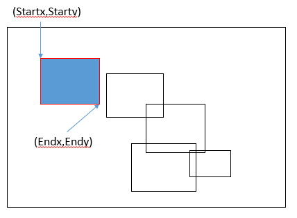
- 最大支持16个win，AF ROI Index为0。
- 各自window宽高设置上，可互相重迭。
- y/x end > y/x start。
- 可以理解为一个win窗口的左上坐标和右下坐标。
AF_ROI_MODE_MATRIX模式：
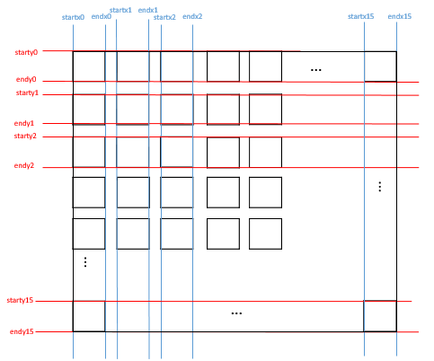
- 最大支持16*16个win，AF ROI Index为1~16。
- y/x end > y/x start。
- StartX, EndX 就是代表纵轴window切割的位置，StrY, EndY 就是代表横轴切割的位置。
Q26：IQfile.bin 和 API.bin的区别？
【Macaron&Ispahan&Pudding&Tiramisu】
-
Iqfile是图像的底层效果参数，包含所有的isp 参数，所有sensor共享；图像质量比较差，只是用于保证应用出图。Iqfile是应用运行过程，驱动自动去加载的。
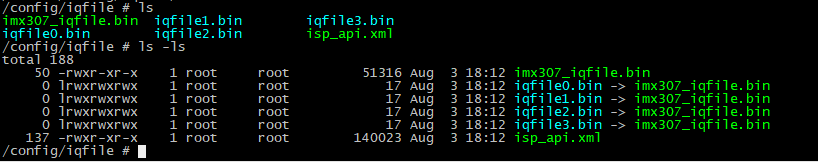
-
Apibin file是开出来给上层调试的图像效果的参数，是在底层iqfile.bin正确加载之后才能正常使用的参数，一般是针对sensor调出最佳的图像效果；需要应用主动调用MI_ISP_API_CmdLoadBinFile()加载。
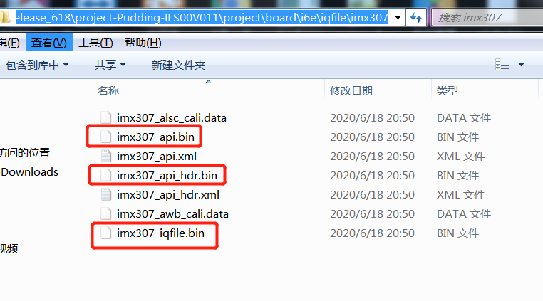
Q27：加载api.bin的时候，会遇到AEPlainLongTbl 里面的数据被重置成iqflie.bin里面的数据，该如何处理？
【Macaron&Ispahan&Pudding&Tiramisu】
此时接上串口或者telnet，查看Log信息，根据打印可以得出是哪里受限制了， 改掉这个参数就可以了，如下图，最小快门HW限制的是22us但是实际写了11us，所以被重置，此时将数据写成22us就可解决。
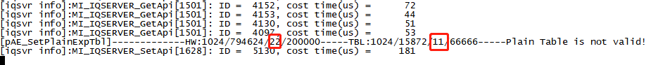
Q28：为什么校正出来的shading左右或上下不一致？
【Macaron&Ispahan&Pudding&Tiramisu】
-
可能是个体模组的问题，需多抽样几个模组测试；
-
如果该模组出图不是全分辨率的状态，裁剪的时候如果不是中心对称裁剪，则会出现shading校正数据没有中心对称的现象，请确认裁剪方式判定。
Q29：为什么公园有黄色草地的地方，摄像机画面里草地的多少影响画面色调冷暖？
【Macaron&Ispahan&Pudding&Tiramisu】
黄色草地在awb 框里面的落点相当于实验室灯箱里TL84左右色温的落点位置，如果草地在画面里比较多，isp会认为此时色温较低，补更多的Bgain，所以画面会偏蓝暗淡。
延伸：摄像机画面里有大面积单色物体的时候，其落点在已经校正好的awb框里面则会影响正常的R/Bgain 补偿，此时如果剔除掉这些单色物体的落点而基本不影响实验室校正的awb落点则剔除掉以求得正确的awb结果，如果已经实质影响了实验室校正的awb落点，则使用LvWeight 找到大面积单色落点对应的色温使其权重减小，进而避免影响当前awb校正结果。
Q30：发现亮度和暗处灰色区域差异过大，过awb客观有些吃力，如何处理？
【Macaron&Ispahan&Pudding&Tiramisu】
通常过AWB客观即关注24色卡最下面一行灰阶部分即可。 灰阶属于饱和度低的区域，可以通过以下方法来保证灰阶RGB值差异变小。Saturation->Saturation->Sat.BySsft是根据原始饱和度来控制饱和度强度，左到右，饱和度增加，可以降低前面第一个的强度来保证灰阶RGB三色接近，也可以设置Saturation -> Saturation -> Sat.Coring的强度，来减弱饱和度，可以理解为减法，这样低饱和度区域就可以被减弱，就可以通过AWB客观。
Q31：在卤素灯或者其他有些光源的场景，awb落点离主色温框比较远怎么办？
【Macaron&Ispahan&Pudding&Tiramisu】
此种情况下，需使用awb advance 功能，额外虚拟加框，先在awb坐标系里面找到该落点的中心坐标，然后对该坐标除以100，取倒数，然后再乘以1024得到一个新的坐标数，x,y分别填入WBAttrEx/sl.tInfo[x].WRgian，WBAttrEx/sl.tInfo[x].WBgain里，sLtInfo[0].AreaSize是虚拟正方形框边长的一半，填入合适数值，sL.tInfo[0].bExclude选Include即表示增加虚拟框。
坐标计算如下：
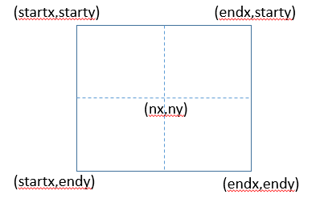
nx = 1024*100/nRgain ny = 1024*100/nBgain nstart = Areasize%2（取余计算） noffset = Areasize/2 startx = nx – noffset – nstart endx = nx + noffset starty = ny + noffset + nstart endyy = ny - noffset
Q32：图像效果人脸偏红（黄）该如何处理？
【Macaron&Ispahan&Pudding&Tiramisu】
-
CCM调试方向。
人脸偏红（偏黄）：肤色主要是对应Original Colorchecker中的7色块，7色块主要是由红色和绿色构成，其中红色大约占绿色的2倍，所以红色系参数对颜色影响占主因，调红色系参数会有更多的变化。
7色块偏红就需要降低红色比重，即可将红色系中红色降低，也可增加红色系中绿色比重，或者减少红色系中蓝色比重，简洁表示：降低红中红，增加红中绿，减少红中蓝；偏黄就需要降低绿色比重，即可将红色系中红色增加，也可减少红色系中绿色比重，或者增加红色系中蓝色比重，简洁表示：增加红中红，降低红中绿，增加红中蓝。下图可近似理解CCM矩阵对应颜色的关系。
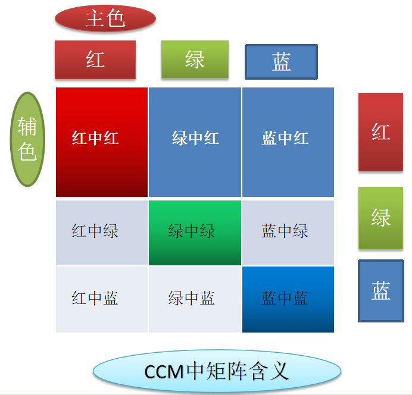
-
HSV调试方向。
人脸一般对应HSV中1点对应的颜色，偏红hue向上拉，偏黄hue向下拉。
Q33：人脸色噪声偏大，colorchecker某些色块噪声较大该如何处理？
【Macaron&Ispahan&Pudding&Tiramisu】
-
CCM系数拉的过大，导致色噪严重，此时减弱系数，饱和度用Saturation item来拉。
-
CCM和Saturation item没有把颜色还原调试到一个差不多的程度，然后主要用HSV来拉hue和sat，此时需要拉较大的值才能达到项目所需的客观标准或者主观效果，此时就特别容易带出彩噪等副作用。此时在CCM和sat 模块下将颜色还原到差不多的程度，然后hsv来微调。
Q34：低照度下发现紫色区域跳动如何处理？
【Ispahan&Pudding&Tiramisu】
此时可以尝试disable PFC item ，如果跳动消失，则说明是FPC模块导致，可以将PFC/Auto.SatSrcSel 值写1以及减弱FPC强度来解决。
Q35：低照度下如何保持色彩鲜艳且不会有太多彩色噪声？
【Ispahan&Pudding&Tiramisu】
首先我们可以调试Denoise->NRChroma_Adv,如果效果未达到要求，可以使用NRChroma，但是需要注意NRChroma强度太大会带来颜色晕开的问题。Macaron没有NRChroma_Adv模块，只能使用NRChroma。
如果色噪还是压不住，则可以考虑降低饱和度。饱和度里面有针对不同亮度和不同饱和度重调饱和度的功能，彩噪一般出现在暗处和低饱和度的地方，我们可以去将暗处和饱和度低的区域再降饱和度，coring 值对彩噪的去除效果也特别强，但是也容易对其他饱和度不是太高的颜色有影响。
Q36：如何提升室外高光绿植饱和度，且不太影响正常室内饱和度？
【Macaron&Ispahan&Pudding&Tiramisu】
将调试好的Saturation/Auto.Sat.AllStr 可以整体扩大一倍，然后Saturation/Auto.Sat.ByYlut值降至一半，此时和之前的调试好的Saturation item的效果一样，此时再去加大Saturation/Auto.sat.ByYlut里面5,6列高亮区间的饱和度来达到高亮区域饱和度提升的效果。
Q37：发现高亮处偏粉如何处理？
【Macaron&Ispahan&Pudding&Tiramisu】
有以下几种情况：
- 高亮处整个偏粉，sensor range 不足导致，请向sensor厂商沟通补足range。（注：太阳黑子也会出现此种现象）
- 高亮处边缘偏粉，与sensor响应特性有关，就是在blooming的时候，RGB信道某个信道饱和溢出后对其他通道的影响，然后通过isp平台处理就产生偏粉现象，请向sensor厂商沟通解决。
- Enable Colortrans item 可能会导致某些场景下高亮处边缘偏粉，取消Enable即可。
Q38：HDR mode下高亮偏粉红？
【Macaron&Ispahan&Pudding&Tiramisu】
HDR融合是曝光比精度问题会引入Dynratio，当数字增益低于1倍时，高亮区255会乘以一个小于1的数，会导致G低于255，后面AWB进行补偿，R和B进行了补偿，但是G没有，所以会导致发粉的现象，保证引入的Dynratio不要小于1可以规避这个问题。
Q39: Linear mode下运动高亮偏红，如何优化？
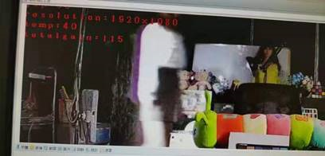
【Ispahan&Pudding&Tiramisu】
调整3DNR_Ex的AR模块。
-
AREn设定开启。
-
调整ARMotTh。
i. ARLumaTh0, 1都设最小值(0)，剩下motion的条件有作用。
ii. ARMotTh0, 1都设最大值(255)。
iii. ARMotTh0, 1逐步设定较小的值(th0 = th1 <= 255)，直到移动物体边缘刚好没有偏色。
iv. 稍微减少ARMotTh0、增加ARMotTh1，让偏色/不偏色的变化和缓一点。
-
调整ARLumaTh。
i. ARLumaTh0, 1都设最大值(255)。
ii. ARLumaTh0, 1逐步设定较小的值(th0 = th1 <= 255)，直到移动物体边缘刚好没有偏色。
iii.稍微减少ARLumaTh0、增加ARLumaTh1，让偏色/不偏色的变化和缓一点。
Q40：低照度下出现锯齿纹，怎么调试？
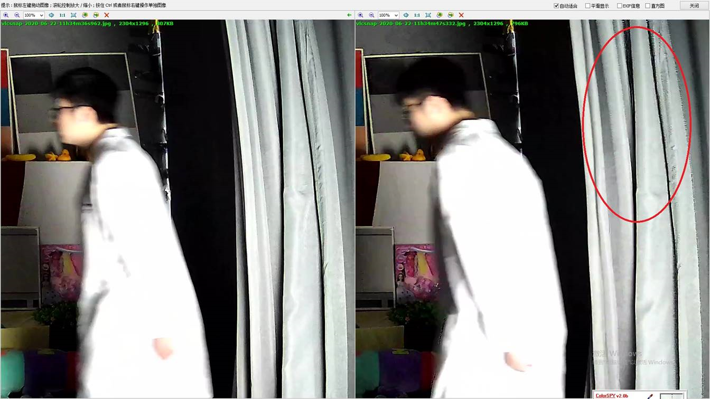
【Ispahan&Pudding&Tiramisu】
Denoise->NR3D_EX->PREn开启，Denoise->NR3D_EX->PRMotTh调整为{1，5}，即可优化这种现象。
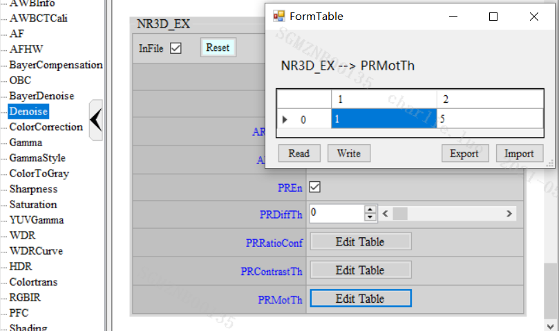
Q41：PFC item是开启的状态，但是实际画面里紫边没有去除？
【Ispahan&Pudding&Tiramisu】
查看PFC_EX->StrenghtByHue里面紫色系颜色是否开有强度，此项容易忽略，要注意。
Q42：跑不到设置的AE target offset 的值如何分析？
【Macaron&Ispahan&Pudding&Tiramisu】
- EVComp 没有按照默认的值0去设置，此时就会导致此问题，改成0即可。
- AEStabilizer->DiffThd设置强度过大所致，合理设置此值或者disable此功能。
Q43：低照度下画面有很多白色条纹状噪声如何处理？
【Macaron&Ispahan&Pudding&Tiramisu】
- 此时VPE里面3Dnr level 设置的应该是1，将3Dnr level 设置成2 白色条纹状噪声即可消失。
- 将Denoise->NR3D->Auto.TFLut 里面前两列参数不要超过3800，白色条纹状噪声就会消失。
Q44：低照度下物体移动彩色背景有横纹该如何处理？
【Ispahan】
对于333/335/337接3M及以上sensor，有些参数需要按照以下来进行设定，不然可能会看到移动物体彩色背景有横纹现象，特别是NR_chroma_adv相关参数。
NRluma_adv参数：StrengthByMot设0。
NRchroma_adv参数：MotionColorReduce设0；StaticLimitRatio设63；MotionClip设0
Shrpness参数：PreCorMotGain设0；DetailMotOffset设0（或者这个设置0会比较影响静态edge，所以可以使用Dummy api->Dummy2将前16格设置128。）；MotGain全设128。
Q45：低照度移动物体有绿色拖影如何处理？
【Macaron&Ispahan&Pudding&Tiramisu】
Denoise->Auto.TFLut最后几列参数过大会导致运动物体绿色拖影，要将此参数写小。
Q46：有点状细节的墙壁，墙壁上的点在跳动，如何调试？
【Macaron&Ispahan&Pudding&Tiramisu】
可能是DPC强度开的太大导致把点状细节的墙壁当成坏点处理，将DPC强度开小验证。
Q47：低照度环境整体风格如何调整为偏绿的讨喜风格？
【Macaron&Ispahan&Pudding&Tiramisu】
低照度下，野外场景大片绿色且天空亮度偏高，导致AWB框内白点较少，且较多的落点为天空，容易出现发紫发黄的情况，需要调整AWB框来剔除或者减少天空和绿色植物的点落在框内。
AWB调试准确之后，可以通过HSV 的HueLut来让偏黄色往绿色靠，增加SatLut对应绿色分量的大小亦可，注意Saturation模块里面Sat.ByYLut暗处强度不要开的太弱或者去色噪模块强度不要开的太强。如果暗处绿色拉不出，可增大ob里r和b的值。
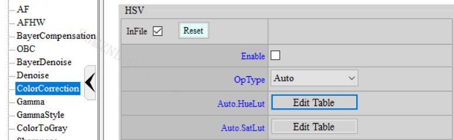
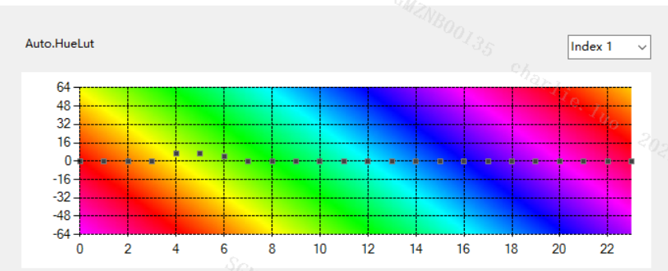
Q48：黑白夜视参数调试的时候除了将uv颜色去掉，还应注意什么？
【Macaron&Ispahan&Pudding&Tiramisu】
黑白夜视效果调试的时候，除了需要把ColorToGray enable，还要将CCM还原成单位矩阵，否者会有很多噪声。AWB模块也建议如下设置，manual模式，R G B三原色的强度设置为1024。
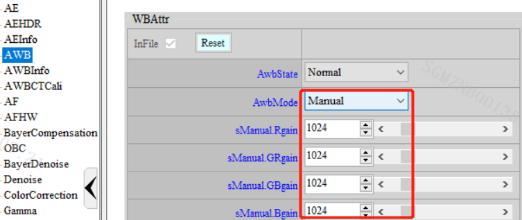
Q49：调试完AWB框之后保存api.bin文件，之后加载api.bin文件发现之前校准的awb参数没有生效，是什么原因？
【Macaron&Ispahan&Pudding&Tiramisu】
拉完awb框，点击apply to camera，然后还要在AWBCTCali itme里面点击AWBCTCali->CtParams->Read 然后再Write page之后再保存api bin。
Q50：调试完图像效果保存api.bin，之后加载api.bin文件发现画面清晰度变的模糊许多？
【Macaron&Ispahan&Pudding&Tiramisu】
在保存api.bin的时候，Dummy->Dummy_EX前面的inFile需要自己勾选才能保存到api.bin文件里面，此项参数里包含锐化相关参数，如果没有保存到清晰度可能会发生变化。
Q51：加载api.bin报以下错误什么意思？
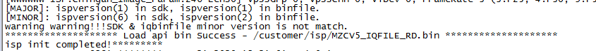
【Macaron&Ispahan&Pudding&Tiramisu】
客户所用的SDK版本和导入的IQ bin文件版本不匹配。
Q52：ALSC调试的时候，色温箱的亮度和色温一般是调多少？
【Macaron&Ispahan&Pudding&Tiramisu】
色温可以和CCM一样，设置低中高三个色温。AEtarget设置为1500，再抓取raw data进行校准。
Q53：calibration tool矫正出来的OBC值全为0是正常的吗？
【Macaron&Ispahan&Pudding&Tiramisu】
一般是calibration配置文件有错误导致的，请按照文档要求进行配置。
Q54：用手完全捂住镜头，画面为什么会偏紫？
【Macaron&Ispahan&Pudding&Tiramisu】 需要重新矫正该增益下的OBC值。OBC校准准确后遮黑画面是全黑的。
Q55：图像有颜色的高亮处（如火焰，信号灯等）发白，怎样能把原有的颜色体现出来？
【Macaron&Ispahan&Pudding&Tiramisu】
Bypass gamma、WDR，看看颜色是否出来，若没出来，减小AE target。
Q56：DVPsensor图像高亮处显示不正常，颜色异样？
【Macaron&Ispahan&Pudding&Tiramisu】
需要在sensor driver里面修改raw的bit位，sensor_dataprec。
Q57：图像红蓝颜色相反？
【Macaron&Ispahan&Pudding&Tiramisu】
修改sensor driver的BayerID。
Q58：ISP许多模块都有自动模式。文档描述数组值对不同增益情况的设定值，不知道哪里能看到这16个具体增益值？
【Macaron&Ispahan&Pudding&Tiramisu】
index16分别代表以下增益：index0：20；index1：2021；index2：2122；index3：22~2^3。以此类推。
Q59：早晨或者傍晚，相机室外场景图像整体偏蓝，该怎么调试？
【Macaron&Ispahan&Pudding&Tiramisu】
早晨太阳未升起或者傍晚太阳落山但是并没有天黑的两种场景，环境色温普遍很高，如果此时AWB框没有白点落在其中，就会出现偏蓝的情况，通常会拉动2号点让框吃到高色温的白点。
Q60：相机对着天空或者纯蓝出现偏黄的问题，该怎么调试？
【Macaron&Ispahan&Pudding&Tiramisu】
这种情况多半是蓝色落点落到了AWB框内，这些蓝点被当成白点拿去做白平衡，导致统计的蓝分量很高，要做白这些点，就会补很多的红分量，多补的这些红分量就会导致画面偏红。
调试方法：通常我们会使用27的色温框，即10000K2300K的色温范围，这时我们要尽量降低2号点的高度，让它靠近3号点，让框内的天空的落点减少，这样的画面会很明显恢复正常，但是要注意会不会出现59题出现的问题。
Q61：AWB模块的eAlgType有四种算法模式，这四者有什么区别呢？
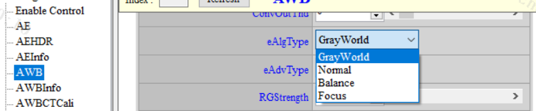
【Ispahan&Pudding&Tiramisu】
- GrayWorld，灰度世界算法，整幅画面的点都拿去做白平衡，但是画面有大色块的场景会出现偏色。
- balance是符合条件的所有色温的白点，即框内所有的白点都用来做白平衡。高低色温落点对图像影响会很大。
- normal是符合条件的占比最大的几个相邻色温的白点去做白平衡。
- focus偏向于一种色温，只有色温变化比较大才会变化，多应用于混合色温场景。 建议用normal，适应性比较强。
Q62：色温变化比较快的时候，画面整体颜色收敛比较慢，该如何调试？
【Macaron&Ispahan&Pudding&Tiramisu】
可以加大AWB->Speed，同时AWB->ConvInThd和AWB->ConvOutThd不宜调试太小，且需要满足AWB->ConvInThd < AWB->ConvOutThd，不然容易出现AWB一直收敛的情况。
Q63：黑白转彩色AWB导致偏色，该如何调试？
【Macaron&Ispahan&Pudding&Tiramisu】
可以在黑转彩loadbin后将AWB->Speed加到最大，之后再还原到原来的speed。
Q64：AF滤波器统计值异常如下，是什么原因？
[AF]win8-0 iir0: 0x04d6b80000, iir1:0x0459c70000, luma:0x00000000, sobelh:0x0002834e00, sobelv:0x00019a2400 ysat:0x058e87 [AF]win8-1 iir0: 0x02099c0000, iir1:0x024c1a0000, luma:0x00000000, sobelh:0x00017e4400, sobelv:0x0000a0db00 ysat:0xb1ec00 [AF]win8-2 iir0: 0x047e030000, iir1:0x0406470000, luma:0x00000000, sobelh:0x00015c1500, sobelv:0x0000c4d300 ysat:0x5d0005 [AF]win8-3 iir0: 0x054c860000, iir1:0x06224f0000, luma:0x00000000, sobelh:0x000125fc00, sobelv:0x00008d9900 ysat:0x000631 [AF]win8-4 iir0: 0x05174e0000, iir1:0x0608b90000, luma:0x00000000, sobelh:0x0001832a00, sobelv:0x0000e65500 ysat:0x07aa4d [AF]win8-5 iir0: 0x0512c90000, iir1:0x0847490000, luma:0x0000b22e, sobelh:0x0001468400, sobelv:0x0000573a00 ysat:0xe57500
【Macaron&Ispahan&Pudding&Tiramisu】
目前所有chip的IIR统计值的有效位最大只有35bit，但是吐出的值达到72bit，且luma的统计值出现0的情况，遇到此类异常请检查cus3a的库 和sdk版本是否对齐。
Q65：AF 统计值在低照度场景出现FV更大，但是清晰度反而更低的情况，是什么原因？
【Macaron&Ispahan&Pudding&Tiramisu】
通常是开启sq模块设置了相关参数导致滤波器会增加过滤条件导致的FV值异常，或者是使用的滤波器系数有缺陷导致的，可以做以下测试：
- 关闭AFfilter_sq的设置看看结果如何，建议使用默认值即可。
- 使用sample code默认的滤波器系数测试。
Q66：夜视黑白模式高增益或者煲机时间长了后就出现发蒙的情况，如何解决？
【Macaron&Ispahan&Pudding&Tiramisu】
这种场景通常是高增益或者高温下sensor的暗电流比正常时大，需要调整OBC->BlackLevel四个通道的值，通常是需要填入更大的值。通常这类情况需要搭配高温逻辑来兼容正常场景和高温场景。
Q67：图像暗的地方不够暗，亮的地方不够亮，感觉data range不是0~255，是什么原因？
【Macaron&Ispahan&Pudding&Tiramisu】
检查Colortrans是否enable，默认关闭，data range为0~255，开启后data range会变小，比如16~235，可能暗处细节会提升，但是损失的对比度无法通过其它模块补偿。
Q68：data range该如何设定？
【Macaron&Ispahan&Pudding&Tiramisu】
BT601：16-235的设定：
Yoffset：64 Uoffset：0 Voffset：0 Matrix：66,129,25,986,950,112,112,930,1006
0-255的设定：
Yoffset：0 Uoffset：0 Voffset：0 Matrix： 77,150,29,981,939,128,128,917,1003
BT709：16-235的设定：
Yoffset：64 Uoffset：0 Voffset：0 Matrix：47,157,16,998,937,112,112,922,1014
0-255的设定：
Yoffset：0 Uoffset：0 Voffset：0 Matrix：54,183,18,995,925,128,128,908,1012
Q69：夜视黑白 R G B不相等，通常表现为偏绿，是什么原因？
【Macaron&Ispahan&Pudding&Tiramisu】
Colortrans的设置不对会导致黑白图像的R、G、B 3个分量不同而出现颜色的情况。
65,129,25,986,949,112,112,929,1005 RGB不相等
66,129,25,986,950,112,112,930,1006 RGB相等
Q70：画面整屏的噪声跳动，要如何调试？
【Macaron&Ispahan&Pudding&Tiramisu】
-
首先排查是硬件原因导致的画面扰动，比如sensor端AVDD不正常，DVP data和clk排线靠的太近产生的干扰等。
-
Denoise->NR3D，建议先用manual模式调试出合适的值，再填到auto上，因为3D对去噪是非常重要的模块，且不同亮度下，不同增益下，噪声的剧烈程度差异很大，所需要使用的3D强度也不同，所以建议用auto模式。拉大MD.Thd和MD.gain，画面就会变安静，建议使用默认值。
Q71：如何消除高亮反差区边缘出现的紫边？
-
【Ispahan&Pudding&Tiramisu】PFC模块是专门用来消除高亮度反差区域的紫边的，通常开大PFC->Strength就能看到效果。但是需要注意PFC是否强度太大而影响正常紫色的颜色，太强会让紫边发黑。
-
【Macaron】早期没有PFC的chip，可以通过降低紫色饱和度来减弱紫边，减弱Color Correction->HSV->SatLut中的紫色分量。
Q72：index用来区分色温时，是参考哪里的色温设置？
【Macaron&Ispahan&Pudding&Tiramisu】
当调试颜色相关的模块，文档说明会说到index表示不同色温档，这里的色温档是参考Color Correction->CCM->CCTthr。
Q73：图像颜色不正常偏色，但是通过肉眼无法判断出是什么模块导致的，该怎么办？
【Macaron&Ispahan&Pudding&Tiramisu】
-
首先，遮黑镜头，通过api tool里面的color picker查看图像R、G、B三色分量是否为0，不为0则表示blc没有校准。
-
保证OBC值正确后，画面颜色仍然不正常，可以通过api tool里面的color picker查看灰阶区域的颜色的R、G、B三者分量是否相等，如果不相等且差异很大说明AWB做的不准，需要调整AWB色温框或者重新校准AWB。
-
如果OBC和AWB都校准了，那图像画面的灰阶部分应该就比较准了，不存在全画面的偏色，个别颜色的偏色则需要通过ccm模块去重新校准。
Q74：图像出现迷宫格的纹路，怎么办？
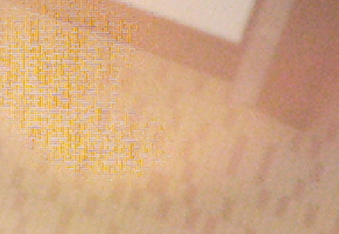
【Macaron&Ispahan&Pudding&Tiramisu】
形成的原因是sensor本身和使用的lens的CRA角度问题，导致当前pixel接受到了来自原本属于相邻pixel的光线，导致GR，GB不相等形成的迷宫格现象。加大BayerCompensation->Crosstalk模块的Strength即可以看到现象减弱或者消失。注意强度不宜太大，否则会吃掉细节。
Q75：高频区出现伪色彩要怎么去除？
形成原因是高频区demosaic方向性判断不对导致的伪彩。
【Macaron&Ispahan&Pudding】
调试方法：BayerCompensation->AntiFalseColor模块，可以参考以下的判断方法进行调试。
if( freq > FreqThrd && edgeScore < EdgeScoreThrd )
isMoire = TRUE;
else
isMoire = FALSE;
【Tiramisu】
加大BayerCompensation->AntiFalseColor->Strength的值。
Q76：白天室外大太阳下画面很扎眼，树叶发白，是什么原因？
【Macaron&Ispahan&Pudding&Tiramisu】
锐化的白边增强开的太强。降低Sharpness->Sharpness->OverShootGain。
Q77：物体边缘描边不够粗，立体感不强，该如何调试？
【Macaron&Ispahan&Pudding】
物体边缘属于大边缘SharpnessD，可以稍微降低Sharpness->Sharpness->DirTh的值，引入一些方向性边缘，增大Sharpness->Sharpness->SharpnessD的值，但是需要注意不要出现锯齿。
Q78：人物移动身上有很多噪声，该如何调试？
【Macaron&Ispahan&Pudding】
- Sharpness->Sharpness->MotGain减小前面动区强度。
- Sharpness->Sharpness->PreCorMotGain加大强度。
- Denoise->NR3D->Y.SF.BlendLut的前面动区可以稍微填小一点，让动区上一些3D来定住噪声，但是需要注意拖影情况。
- NRluma/NRluma_adv by motion的强度加大。
【Tiramisu】
- Sharpness->Sharpness->GainByMot和Sharpness->Sharpness->DetailGainUDByMot参数可以适当减弱。
- Sharpness->Sharpness->CorByMot前面动区加强。
- Denoise->NR3D->Y.SF.BlendLut的前面动区可以稍微填小一点，让动区上一些3D来定住噪声，但是需要注意拖影情况。
- Denoise_YNR的NRluma/NRluma_adv的强度加大。
Q79：移动物体后面跟着很多噪声，该如何调试？
【Macaron&Ispahan&Pudding】
- Denoise->NR3D->Y.SF.BlendLut加强过度区2D强度调大。
- Denoise->NRluma->Strength加大，Denoise->NRluma->SpfBlendLut加大。
- 判断sharpness是否开的太强。
【Tiramisu】
- Denoise_3DNR->NR3D->Y.SF.BlendLut加强过度区2D强度调大。
- Denoise_YUR->NRluma->Strength加大，Denoise->NRluma->kernelstr加大。
- 判断sharpness是否开的太强。
Q80：AWBinfo里的CT值和AWB Analyzer里的CT值有什么差异？为什么不一样？
【Macaron&Ispahan&Pudding&Tiramisu】
AWBinfo是经过AWB算法后计算出来的色温值，会随着eAlgType的算法选择而变化，而AWB Analyzer里的CT值是框内的落点统计的CT值（来自raw data统计所得）。
Q81：如何提升高频区的细节？比如草地小草的细节。
【Ispahan&Pudding】
- 先bypass DynamicDP、Crosstalk、NRDeSpike看下是否是这些模块吃掉了高频细节，如果bypass后，高频细节提升明显，则需要减弱对应的模块强度。
- Sharpness->Sharpness->DirTh设置为255，减小Sharpness->Sharpness->LpfEdgeGainUD的值。
- Sharpness->Sharpness->DetailTh减弱，Sharpness->Sharpness->DetailByY加大对应亮度下的强度，Sharpness->Sharpness->OverShootLimit和Sharpness->Sharpness->UnderShootLimit降低。
【Tiramisu】
- 同上。
- Sharpness->Sharpness->sharpnessUD加大H的强度，Sharpness->Sharpness->HighRatioUDByState加大H的强度，Sharpness->Sharpness->DirRatioByState的复杂区强度减弱。建议调试时，中频和高频参数都试下，可能有时候会吃到中频参数。
Q82：如何提升画面暗部的细节？
首先Bypass NRDeSpike、DynamicDP看看会不会是2d或者dpc把一些细节干掉了。然后可以从以下几个模块调试：
【Ispahan&Pudding】
- WDR->WDR->AutoDetailEnhance和WDR->WDR->ManualDetailEnhance，当使用auto时，manual失效，反之，auto设置为0时，manual启用。
- BayerDenoise->NRDdSpike->StrengthByY，左侧强度是否被增强？如果太大容易干掉暗处细节。
- Sharpness->Sharpness->CorLut、Sharpness->Sharpness->SclLut、Sharpness->Sharpness->DetailByY、这几个模块都是由暗到亮来调整。CorLut数值越大抑制细节强度越大锐化强度越小。SclLut、EdgeKillLut、DetailByY数值越大锐化强度越大。
【Tiramisu】
- 同上。
- 同上。
- Sharpness->Sharpness->CorByY暗区的强度减弱，Sharpness->Sharpness->SclByY暗区的强度可以加强，Sharpness->Sharpness->EdgeKillLut暗区的强度加强。
Q83：如何不通过增加AE target提升暗部亮度？
【Macaron&Ispahan&Pudding&Tiramisu】
- gamma拉高暗区的曲线。对亮度区域的选取比较粗略，较难调整。
- WDR强度增加，WDR->WDR->WDRStrByY前面几列为暗处WDR强度，可以稍微增加。建议使用这种方法。
- YUVgamma通常是高增益下为了拉升亮度才会使用这个模块，通常不建议使用。
Q84：调试一个新sensor，借鉴其他sensor的效果参数需要注意什么？
【Macaron&Ispahan&Pudding&Tiramisu】
通常调试一颗新sensor，在原厂没有提供参数的情况下，可以从sdk里拿同chip的其他sensor的api.xml作为基础模板进行调试，可大大加快调试进度。注意以下几点：
- linear模式参考linear模式参数，HDR参考HDR模式，不要用linear模式参数作为基本参数调试HDR效果。
- 选择感光相近的sensor的参数作为参考。
- AWB、CCM、OBC、sharding等和sensor差异相关的模块都需要重新校准。
- HDR模式注意根据hdr ratio修改AE table里面最大曝光时间。
- 注意版本差异，可通过xml对比进行参数移植。
Q85：如何判断图像异常是sensor端问题还是isp端问题？
【Macaron&Ispahan&Pudding&Tiramisu】
通过api tool的外挂软件，抓取raw data和yuv data，如果raw data异常了，说明sensor端有问题，如果raw data正常，yuv data异常，则大概率是ISP端有问题。
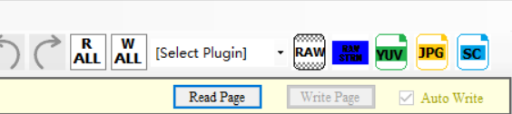
Q86：边缘坏点如何消除？
【Macaron&Ispahan&Pudding&Tiramisu】
DPC模块无法消除边缘坏点，需要sensor每边拓展两行数据，用于isp dpc消除边缘坏点，在isp后面的模块再裁剪拓展的数据行和列以满足需要的分辨率。DPC目前使用的5*5的filter进行处理。比如1920*1080需要拓展为1924*1084，vpe裁剪的起点为（2，2），裁剪分辨率为1920*1080即可。
Q87：大光圈镜头白天室外，大太阳的场景过曝，该如何解决？
【Macaron&Ispahan&Pudding&Tiramisu】
比如imx307等感光较好的sensor搭配比如F1.0、F1.2等大光圈，在白天室外大太阳的场景下，容易出现过曝的情况。通常是因为设置的最低shutter并没有为sensor最低曝光时间导致的。了解sensor最小曝光时间，填入AE->ExposureLimit->MinShutter和AE->AEPlainLongTbl->LongExpoTblEntry的Index0行的US列，再在过曝场景测试，应该就不存在过曝了。
Q88：HDR融合异常，比如车灯周围发黑（红色框处），该如何调试？
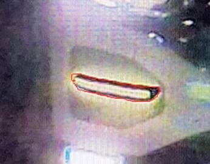
【Macaron&Ispahan&Pudding&Tiramisu】
针对车灯出现黑色异常区域的原因说明如下：
DOL HDR sensor（双帧融合HDR sensor）先吐长帧数据，再吐短帧数据，两帧之间有时间差，时间差为帧间隔加短帧曝光时间，所以运动状态下，运动物体在图像中的位置是发生了变化的，即长曝帧中运动物体和短曝帧中运动物体融合是不能完全对齐的。HDR算法要去考虑长帧短帧的融合比例进行融合，融合后的重影或者残影，我们称之为运动鬼影。
车灯场景如下图，长帧的车灯及车灯周围基本过曝，短帧的车灯及周围不过曝（下图红框部分，产生黑环的根源），如果短帧融合比例很大，融合后就出现黑环的现象。
可增加长帧融合比例来优化此现象。
整体思路是让动区判断多些，让后动区上更多的长曝。 Th1 Th2减小，测试影响不明显。 Noiselevel减小，判断动区越多。 MotionTh 减小，判断动区越多。 MotionAdjLut后面动区增大，动区上更多长曝修复车灯黑环问题。
融合图像异常的优化方法：由于DOL HDR，运动鬼影无法消除，只能通过调整长短帧的融合比例来满足实际效果要求。
优化后的效果：
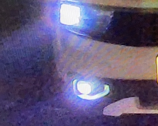
Q89：数字宽动态（WDR）不存在融合鬼影，而真实宽动态（通常指DOL HDR）存在融合鬼影，为什么？
【Macaron&Ispahan&Pudding&Tiramisu】
WDR是单帧图像通过算法进行的动态范围加强，而HDR通常是长短帧两帧融合的动态范围加强，HDR的动态范围增强能力远大于WDR，但是运动状态下，长短帧之间存在时间差，运动物体所在的图像的坐标发生改变，所以融合时需要选择长短帧的融合比例来进行融合，故会产生鬼影现象，通常是根据具体需求来设置长短帧的融合比例。
Q90：如何保证不同的sensor效果风格类似？
【Macaron&Ispahan&Pudding&Tiramisu】
风格通常是主观判断，风格相近主要体现在色彩风格和对比度风格，这两个风格一致的话，第一眼的直观感受就是风格相近。通常保证亮度差异不大的情况下，色彩风格主要是指AWB的冷暖风格，ccm和saturation对颜色的增强效果。对比度风格，Gamma，WDR，GammaStyle模块使用相同的参数，即可保证对比度风格相近。
Q91：低照度下，开启WDR后，出现头发和人脸分层现象，会是什么原因？
【Macaron&Ispahan&Pudding&Tiramisu】
WDR强度开的较大，WDR->WDR->WDRStrByY的前面几个亮度强度的跨度很大，就会容易造成分层现象，特别是运动时亮暗差比较大的物体更加明显，减弱跨度差值即可减弱这种现象。
Q92：镜像或者翻转之后图像颜色异常？
【Macaron&Ispahan&Pudding&Tiramisu】
有的sensor mirror/flip之后需要设置对应的bayer ID，如果sensor端不支持设置bayer ID，则需要通过vif端去平移来满足合适的bayer ID。
Q93：为什么很亮的时候，ISPgain不为1x，反而大于1x？
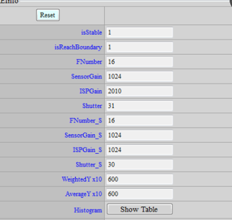
【Macaron&Ispahan&Pudding&Tiramisu】
主要是为了弥补shutter精度不足的问题，属于正常情况。如果shutter 很小的时候，比如一个step是30，那下一个是60，这样亮度会跳两倍，为了避免它跳两倍，中间就补gain，比如30+1.5x gain，那就只会跳1.5x，上图是一个最刚好的状态，它准备要跳60，但是又不满60，所以这个时候gain就会来到最高点，接近2x但是不到2x，基本上这个补isp gain的行为不会出现超过2x的情况。
Q94：AWB做不灰的原因有哪些？
【Macaron&Ispahan&Pudding&Tiramisu】
- 色温框没有调整好。
- 某些颜色大量落入色温框中影响AWB计算结果。
- 饱和度太浓导致一些微误差被放大。
- OB不准导致线性度不佳。
- Color Shading太严重却没校正ALSC。
Q95：AWB收敛不稳定，一直在变色，可能的原因？
【Macaron&Ispahan&Pudding&Tiramisu】
- OB在飘。
- AWB统计值异常。
- 大部分落点在色温框之外, 因此落在色温框的统计点数量不够稳定让AWB震荡。
Q96：AE闪烁可能的原因？
【Macaron&Ispahan&Pudding&Tiramisu】
判断方法：手动AE，闪烁消失，则大概率为AE闪烁。
可能原因：
- sensor gain/ shuter 线性度异常。
- sensor gain/ shutter 生效未同步。
- 收敛速度太快导致overshoot/hunting。
- 收敛区间太小，导致AE无法进入stable。
- 50/60hz de-flicker未开或设错。
- 客户周期性的下某些AE API 改变AE行为。
Q97：WDR闪烁可能的原因？
【Macaron&Ispahan&Pudding&Tiramisu】
判断方法：Bypass WDR模块闪烁消失，则大概率为WDR闪烁。
可能原因：
- 未上连续AE。
- AE收敛速度太慢，导致前进步长小于sensor精度，亮度收敛过程出现阶梯而出现WDR闪。
- box number 随iso有切换。
- Dark Tone Enhance curve 随iso有切换。
- WDR 参数内插未开。 6、Gamma 随iso有切换。
Q98：HDR闪烁可能的原因？
【Macaron&Ispahan&Pudding&Tiramisu】
判断方法：
- linear没有；
- manual AE 和bypassWDR仍然出现，则大概率为HDR闪烁。
可能原因：
- 长短曝shutter 超过sensor 限制。
- 长短曝设定比例不对。
- 短曝区flicker问题。
Q99：低照度下，特别在点光源下AF统计值没有趋势，可以如何优化？
画面过暗(譬如灯光影响)，导致细节统计不到。
【Macaron&Ispahan&Pudding】
使用MI_ISP_CUS3A_SetAFYParam将亮度提升，获取较暗的细节统计值。
【Tiramisu】
Tiramisu以后可使用MI_ISP_CUS3A_SetAFYMap代替。
Q100：shading暗角补不亮，会是什么原因？
【Macaron&Ispahan&Pudding&Tiramisu】
- 测试时WDR 是否有开? WDR 会导致暗角状况加剧。
- 校正时raw 是否为pure raw。(ex: MACARON 要记得关OBC / 3DNR/ BNR)
- 校正时填入Calibration tool 的OBC信息是否正确。
- 拍raw 时的AE target 是否过低。(建议值: 100@8bit (0~255))
Q101：HDR短曝偏色，会是什么原因？
【Macaron&Ispahan&Pudding&Tiramisu】
- 偏色原因多半是长短曝的主要色温不同。
- 目前HDRmode 下AWB 已同时考虑长曝和短曝两组统计值，理论上偏色问题应已较不明显。
- 修改AWB 加大高色温的weighting (短曝因为本身很暗，统计值数字很小，所以先天weighting会比较小)。
- 必要时也可直接降低稍微蓝色饱和度(常见为窗外偏蓝)。
Q102：HDR短曝反黑，会是什么原因？
【Macaron&Ispahan&Pudding&Tiramisu】
- sensor 长短曝亮度与HDR Ratio 设定可能不匹配。
- 关闭HDR dynamic ratio 及HDR by motion 避免干扰判断。
- 检查当前的sensor 长短曝曝光参数与 HDR API 中的HDR Ratio 设置是否匹配。
- 检查长短曝曝光参数是否有超过sensor 硬件限制。
- 调整HDR API 中的HDR Ratio 看状况是否改善，应可调至长短曝交界无明显渐变，但还是需理清sensor 长短曝两张raw亮度比例不如预期的原因。
Q103：低照度全彩和红外黑白模式下，高增益下的噪声如何消除？
【Macaron&Ispahan&Pudding&Tiramisu】
总体思路，3D上到即将会出现拖影或者有轻微可接受的拖影，再调节sharpness提升细节到噪声和细节比较均衡的状态，最后调整2D让画面干净，处理跟随噪声等，三者有联动，所以需要不停尝试来得到更优的参数。
Q104：额外的外挂程序调用isp api出现无效情况是什么原因？
【Macaron&Ispahan&Pudding&Tiramisu】
isp api需要在主进程中调用，不支持跨进程操作，支持单进程跨线程操作。需要跨进程操作建议客户自己将isp api封装成可跨进程的接口。